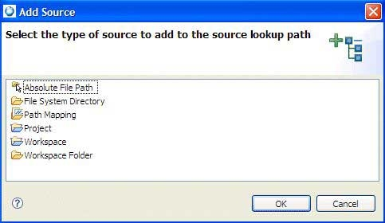

The Source tab lets you specify where the debugger should look for source files. By default, the debugger uses the source from your project in your workspace, but you can specify source from other locations (e.g. from a central repository).

The Source tab in the Launch Configurations dialog.
To specify a new source location:
- On the Source tab, click Add…. The Add Source Location dialog appears.

- Select the type of source that you want to add to the lookup source path from the following:
- Absolute File Path
- An absolute path to a file in the local file system.
- File System Directory
- A directory in the local file system. If you wish to add source from outside your workspace, select the File System Directory path type, and click OK. Type the path to your source in the Select location directory field, or use the Browse button to locate your source.
- Path Mapping
- A path mapping.
- Project
- A project in the workspace.
- Workspace
- All projects in the workspace. If you wish to add source from your workspace, select the Workspace path type, or from a specific folder select Workspace Folder and then click OK.
- Workspace Folder
- A folder in the workspace.
If you want to specify a mapping between directories, choose the Associate with option and enter the directory in the available field. For example, if your program was built in the C:/source1 directory and the source is available in the C:/source2 directory, enter C:/source2 in the first field and associate it with C:/source1 using the second field.
If you want the IDE to recurse through the subdirectories to find the source, then select the Search subfolders option.
- After you click OK, you can remove or modify a source path by selecting a source lookup path from the list, and then clicking Remove or Edit.
- To change the order of source lookup paths by selecting a type, and then clicking Up or Down. To search for duplicates in your source locations, select the Search for duplicate source files on the path checkbox.
- Click Finish. The IDE adds the new source location.